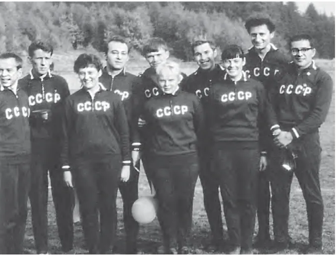
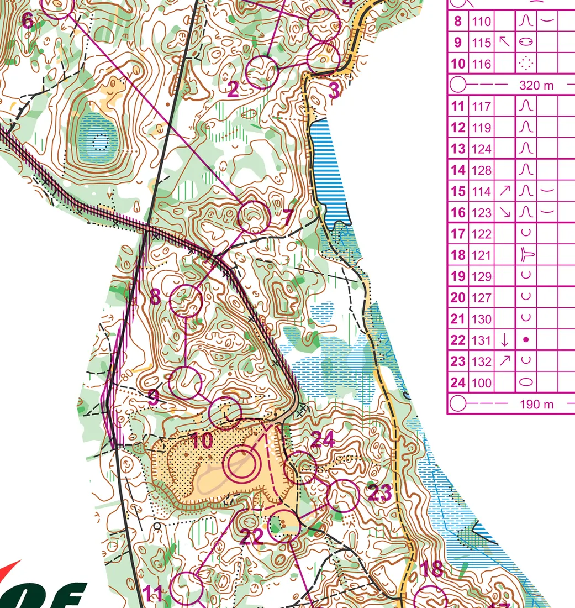

Исторические статьи O-Maps
Как ориентирование развивалось в мире, в стране и в регионах: первые старты, люди, карты и чемпионаты. Статьи опираются на календарь O-Maps, архив карт и собрание документов: протоколы, программы, газетные публикации.

Ориентирование в России и СССР
От «закрытого маршрута» 1939 года и первого дневного старта 1959-го до всесоюзных соревнований, чемпионатов СССР и России и мировых титулов в беге, на лыжах и на велосипедах.

Ориентирование в Ленинграде и Петербурге
От ночного «закрытого маршрута» и первого дневного старта в Линдуловской роще до спринтов в Петропавловской крепости: клубы, карты, люди и чемпионы города и области.

Чемпионаты мира и Европы
Шесть чемпионатов Международной федерации ориентирования (IOF) — бегом, на лыжах и на велосипедах: как менялись соревнования, кто в них побеждал и какие старты стали поворотными.

Чемпионаты СССР и России
Пять национальных чемпионатов: бегом с 1981 года, на лыжах с 1989-го, на велосипедах с 1996-го. Главные герои, архивные карты и документы.